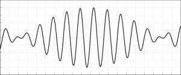

The One-Dimensional Wave Function Superposition JavaScript Model shows how the superposition principle gives rise to wave phenomena such as standing waves and beats. Users enter real-valued wave functions and observe both the time dependent functions and their superposition. This model uses the JavaScript mathematical function parser.
The One Dimensional Wave Function Superposition JavaScript Model was developed by Wolfgang Christian and Francisco Esquembre using version 5 of the Easy Java Simulations (EJS 5) modeling tool. Although EJS is a Java program, EJS 5 creates stand alone JavaScript programs that run in almost any PC or tablet browser. Information about EJS is available at: <http://www.um.es/fem/Ejs/> and in the OSP ComPADRE collection <http://www.compadre.org/OSP/>.